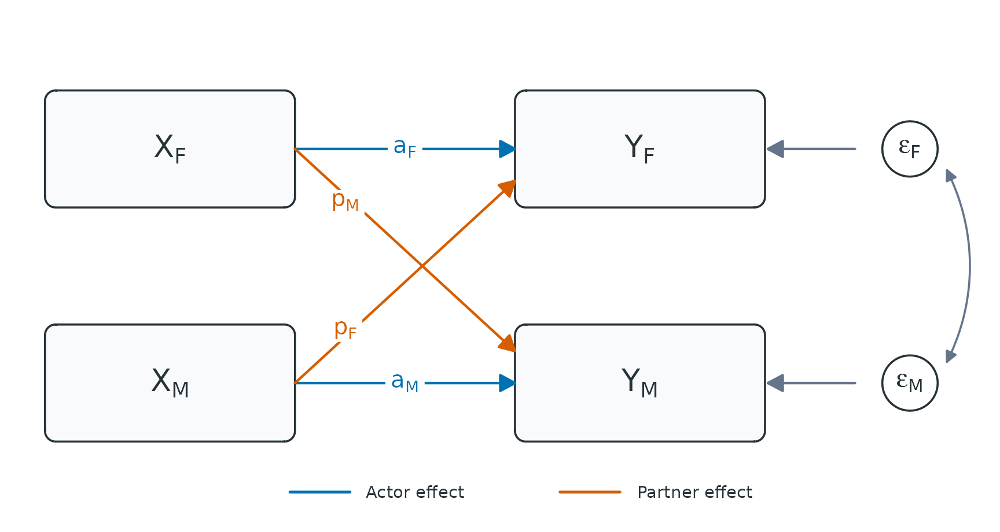
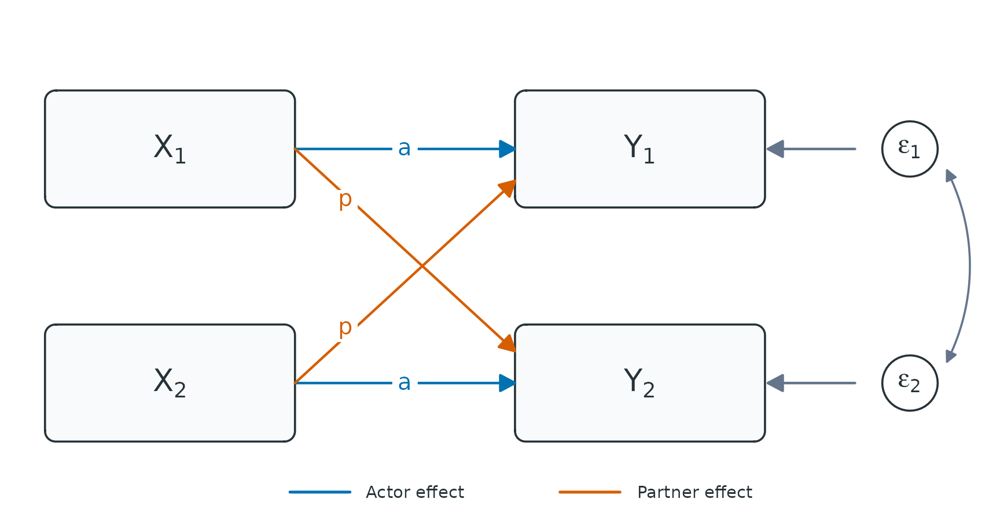
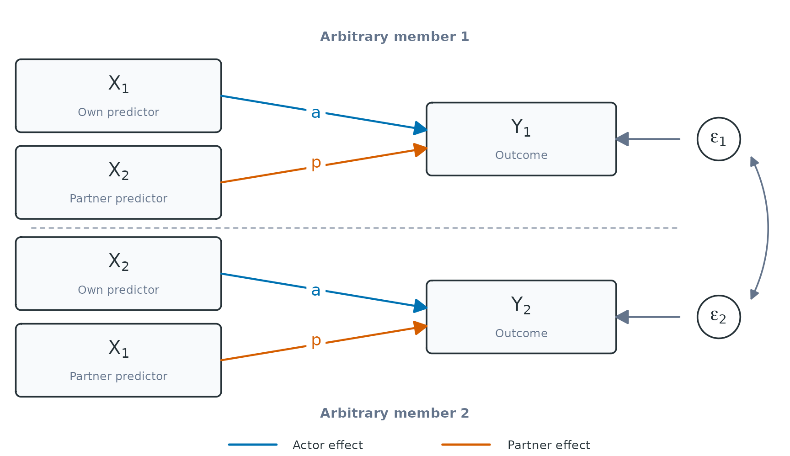

Actor-Partner Interdependence Model (APIM)
Pascal Küng
apim.RmdThis vignette focuses on the cross-sectional and intensive longitudinal Actor-Partner Interdependence model for distinguishable and exchangeable dyads.
For the main data requirements and validation workflow of the
interdep package, start with the Getting Started vignette. For APIMs that
combine distinguishable and exchangeable dyad compositions, see the Mixed-Composition APIM vignette. For DIM
predictors and their equivalence to APIM effects in exchangeable dyads,
see the Dyad-Individual Model vignette. For DSM
predictor scores and their relationship to APIM effects in
distinguishable dyads, see the Dyadic Score Model
vignette.
This vignette is under construction and for now only contains a few preliminary example models. Please check back soon!
The cross sectional Gaussian distinguishable APIM

Conceptual cross-sectional APIM for distinguishable female-male dyads. Actor and partner effects can differ by the role of the outcome member, and the two outcome residuals covary within dyads.
Here, and are the actor effects on the female and male outcomes, whereas and are the corresponding partner effects. The diagram abbreviates these paths as , , , and , with the subscript identifying the outcome member. In the text and equations, fixed coefficients use and write out actor and partner explicitly. The corresponding intercepts are and . All four paths can differ in a distinguishable APIM.
The conceptual diagram places both members in one SEM-style path model. The same model is fitted in long format with one outcome row per member. In the individual-level representation below, the female predictor is the actor predictor for the female outcome and the partner predictor for the male outcome; the male predictor changes roles in the same way. The coefficient subscript identifies the outcome member.

Individual-level representation of the distinguishable cross-sectional APIM used for the long-format multilevel model. For the female outcome, the female predictor is the actor predictor and the male predictor is the partner predictor; these roles reverse for the male outcome. Actor and partner coefficients may differ by outcome role, and the two member residuals may have different variances and covary.
We first prepare the example data with
prepare_interdep_data():
apim_distinguishable_data <- prepare_interdep_data(
data = example_dyadic_crosssectional,
group = coupleID,
member = personID,
role = gender,
predictors = communication,
model_type = "apim"
)The generated .i_* columns can be used directly in the
model formula. Here is a simple example:
apim_distinguishable_model <- glmmTMB::glmmTMB(
satisfaction ~
# Gender-specific intercepts
0 +
.i_is_female_x_male_female +
.i_is_female_x_male_male +
# Gender-specific actor effects
.i_is_female_x_male_female:.i_communication_actor +
.i_is_female_x_male_male:.i_communication_actor +
# Gender-specific partner effects
.i_is_female_x_male_female:.i_communication_partner +
.i_is_female_x_male_male:.i_communication_partner +
# Dyad-level unstructured random effects represent the two partner
# residual variances and their covariance when dispformula = ~ 0.
# This is glmmTMB-specific syntax! lme4 and brms use different syntax.
us(0 +
.i_is_female_x_male_female +
.i_is_female_x_male_male
| coupleID)
, dispformula = ~ 0
, family = gaussian()
, data = apim_distinguishable_data
)Residual random-effects structure
For a distinguishable female-male dyad, the two members can have different residual variances. Their residual covariance matrix is
Rows and columns are ordered female, male.
With one outcome row per member, this structure is estimated with an
unstructured random-effects block such as
us(0 + .i_is_female_x_male_female + .i_is_female_x_male_male | coupleID)
and dispformula = ~ 0. The two indicator columns select the
female and male rows, respectively. The us() block
estimates both variances and their covariance.
The cross-sectional Gaussian exchangeable APIM

Conceptual cross-sectional APIM for exchangeable dyads. The two members share one actor effect and one partner effect; their outcome residuals have equal variances and covary within dyads.
Because the member labels are arbitrary, swapping members 1 and 2 does not change the model. The two actor paths therefore share the coefficient , and the two partner paths share . The members also share the intercept . The two residual variances are constrained to be equal, while their covariance is estimated. The diagram abbreviates the shared actor and partner effects as and .
The individual-level representation makes the long-format model explicit. For each outcome row, that member’s own predictor is the actor predictor and the other member’s predictor is the partner predictor. Swapping the arbitrary member labels swaps the two panels but does not change either coefficient.

Individual-level representation of the exchangeable cross-sectional APIM used for the long-format multilevel model. Each member’s own predictor has the shared actor effect, and the other member’s predictor has the shared partner effect. The two residual variances are equal and the residuals may covary.
Residual random-effects structure and back-transformation
For an exchangeable dyad, interdep generates an
arbitrary member-difference column, named .i_diff_*, that
is +1 for one member and -1 for the other. The
exchangeable residual structure is represented by two separate
random-effects terms: a shared dyad random intercept and a random
coefficient for this difference column (del
Rosario and West 2025). If their random effects are denoted by
and
,
the two members receive
Because the shared and difference effects are fitted in separate random-effects terms, they are uncorrelated. Writing their variances as and gives
The implied member-level residual covariance matrix is therefore
Thus, both members have the same residual variance , their covariance is , and their residual correlation is . Conversely, the shared and difference variances can be recovered from a member-level variance and covariance as
For example, a random-intercept variance of 1.2 and a difference variance of 0.3 imply a member variance of 1.5 and a covariance between partners of 0.9.
Reversing the arbitrary +1/-1 assignment changes the
sign of
but not its variance or the implied member-level covariance matrix. In
longitudinal models, the same transformation applies separately to
stable dyad-level and same-occasion dyad-level covariance blocks.
Extension to exchangeable random slopes
The same shared/difference back-transformation applies to random
slopes (del Rosario and West 2025). For
example, let
denote the shared actor random slope for dyad
and
the corresponding .i_diff_* random slope. The tilde marks
random coefficients from the member-difference block. The actor slopes
for the members assigned +1 and -1 are
Because the shared and .i_diff_* blocks are fitted as
separate random-effects terms, they are independent. Therefore,
and
The same calculation applies to the partner slopes and random intercepts. Any covariances among the random intercept, actor slope, and partner slope can be back-transformed in the same way.
Testing distinguishability
Distinguishability can be evaluated by comparing a full model in which the two roles may differ with a restricted exchangeable model. This comparison tests the imposed equality constraints jointly. Here, they concern the fixed intercepts, actor effects, partner effects, and residual variances.
The two parameterizations require different generated columns. The full distinguishable model was fitted above, so we now prepare the same original observations as exchangeable:
apim_exchangeable_data <- prepare_interdep_data(
example_dyadic_crosssectional,
group = coupleID,
member = personID,
role = gender,
predictors = communication,
set_exchangeable_compositions = "female-male"
)The exchangeable model constrains the corresponding fixed effects and residual variances to be equal across members:
apim_exchangeable_model <- glmmTMB::glmmTMB(
satisfaction ~ 0 +
.i_is_female_x_male +
.i_communication_actor +
.i_communication_partner +
us(0 + .i_is_female_x_male | coupleID) +
us(0 + .i_diff_female_x_male_arbitrary | coupleID),
dispformula = ~ 0,
family = gaussian(),
data = apim_exchangeable_data
)compare_interdep_models() verifies that both models use
equivalent original observations before performing the likelihood-ratio
test:
compare_interdep_models(
restricted = apim_exchangeable_model,
full = apim_distinguishable_model
)
#> Likelihood-ratio test for nested models fitted to equivalent interdep data
#> Mathematical nesting is assumed and cannot be verified from the data alone.
#>
#> Df AIC BIC logLik deviance Chisq Chi Df
#> apim_exchangeable_model 5 603.98 619.84 -296.99 593.98
#> apim_distinguishable_model 9 589.49 618.03 -285.75 571.49 22.492 4
#> Pr(>Chisq)
#> apim_exchangeable_model
#> apim_distinguishable_model 0.0001599 ***
#> ---
#> Signif. codes: 0 '***' 0.001 '**' 0.01 '*' 0.05 '.' 0.1 ' ' 1
#>
#> Under the assumed nesting and chi-squared reference distribution, the test provides evidence that `apim_exchangeable_model` fits the data worse than `apim_distinguishable_model` (likelihood-ratio test: χ²(4) = 22.49, p < .001).The test provides evidence against all restrictions jointly, but it does not show which parameter differs. The helper also cannot determine whether the models are mathematically nested; that remains a modeling requirement. The usual chi-squared reference distribution may be unreliable when a tested variance parameter lies on its boundary.
Intensive longitudinal APIMs
Concurrent ILD Gaussian APIM for distinguishable dyads
Observed person means used to construct the between-person
(cbp) predictors can be unreliable when each member
contributes few occasions, which can bias between-person estimates (Gottfredson 2019).
Example model specification:
ild_distinguishable_model <- glmmTMB(
closeness ~ 0 +
.i_is_female_x_male_female +
.i_is_female_x_male_male +
# Gender specific time trends
.i_is_female_x_male_female:diaryday +
.i_is_female_x_male_male:diaryday +
# Gender-specific within-person actor effects
.i_is_female_x_male_female:.i_provided_support_cwp_actor +
.i_is_female_x_male_male:.i_provided_support_cwp_actor +
# Gender-specific within-person partner effects
.i_is_female_x_male_female:.i_provided_support_cwp_partner +
.i_is_female_x_male_male:.i_provided_support_cwp_partner +
# Gender-specific between-person actor effects
.i_is_female_x_male_female:.i_provided_support_cbp_actor +
.i_is_female_x_male_male:.i_provided_support_cbp_actor +
# Gender-specific between-person partner effects
.i_is_female_x_male_female:.i_provided_support_cbp_partner +
.i_is_female_x_male_male:.i_provided_support_cbp_partner +
# random effects for stable non-independence (means)
us(0 +
.i_is_female_x_male_female +
.i_is_female_x_male_male
| coupleID) +
# Same-day residual covariance
us(0 +
.i_is_female_x_male_female +
.i_is_female_x_male_male
| coupleID:diaryday)
, dispformula = ~ 0
, family = gaussian()
, data = ild_distinguishable_data
)
summary(ild_distinguishable_model)Concurrent ILD Gaussian APIM for exchangeable dyads
Following del Rosario and West, the stable dyad covariance can be
represented using sum-and-difference random effects (del Rosario and West 2025). In longitudinal
Gaussian APIMs fitted with glmmTMB, the same
parameterization can be extended to the dyad-occasion level to represent
same-occasion residual dependence.
Current limitations of dyadic ILD designs in R
Concurrent dyadic ILD models can adjust for a time trend and account for stable dyadic dependence and same-occasion partner dependence. They do not model residual serial dependence, however, and therefore estimate concurrent associations under the assumption that residuals from different days are independent.
If the goal is to retain these concurrent APIM associations while
accounting for serial dependence, the closest extension is a dyadic
residual dynamic structural equation model (RDSEM). It keeps the
concurrent regression separate from a VAR model for its residuals (Asparouhov and Muthén 2020; McNeish and Hamaker
2020). This residual-VAR structure is not directly available
through the glmmTMB interface used here, and open-source
support for dyadic dynamic models remains very limited (del Rosario and West 2025). Within open-source
R, such a model generally requires custom TMB or Stan code.
Dynamic models
A practical alternative is a model with lagged outcomes, especially when carryover or temporal dynamics are part of the research question (Gistelinck and Loeys 2020). In such a model, the interpretation changes. All APIM predictor effects then describe associations conditional on the members’ prior outcomes.
By adding the outcome to predictors and selecting it
with lag_predictors, prepare_interdep_data()
returns lag-1 raw and within-person scores alongside the contemporaneous
scores. Between-person scores are not lagged because they describe
stable differences between members.
For this example, we obtain the lagged actor and partner outcome
columns through the lag_predictors argument:
ild_apim_data_dynamic <- prepare_interdep_data(
example_dyadic_ILD,
group = coupleID,
member = personID,
time = diaryday,
predictors = closeness,
lag_predictors = closeness,
model_type = "apim",
seed = 123
)This returns all necessary variables for either choice, including
lag-1 raw and within-person closeness scores. Lags are matched at
exactly diaryday - 1, so omitted diary days are not
bridged.
A simple fixed-slope dyadic stability and influence model (del Rosario and West 2025):
stability_influence <- glmmTMB::glmmTMB(
closeness ~ 1 +
# Stability (actor effect across time)
.i_closeness_actor_lag1 +
# Influence (partner effect across time)
.i_closeness_partner_lag1 +
# Linear time trend
diaryday +
# Stable exchangeable dyad-level covariance
us(1 | coupleID) +
us(0 + .i_diff_assumed_exchangeable_arbitrary | coupleID) +
# Same-day exchangeable dyad-level covariance
us(1 | coupleID:diaryday) +
us(0 + .i_diff_assumed_exchangeable_arbitrary | coupleID:diaryday)
, dispformula = ~ 0
, family = gaussian()
, data = ild_apim_data_dynamic
)
summary(stability_influence)
#> Family: gaussian ( identity )
#> Formula:
#> closeness ~ 1 + .i_closeness_actor_lag1 + .i_closeness_partner_lag1 +
#> diaryday + us(1 | coupleID) + us(0 + .i_diff_assumed_exchangeable_arbitrary |
#> coupleID) + us(1 | coupleID:diaryday) + us(0 + .i_diff_assumed_exchangeable_arbitrary |
#> coupleID:diaryday)
#> Dispersion: ~0
#> Data: ild_apim_data_dynamic
#>
#> AIC BIC logLik -2*log(L) df.resid
#> 2929.0 2968.0 -1456.5 2913.0 967
#>
#> Random effects:
#>
#> Conditional model:
#> Groups Name Variance Std.Dev.
#> coupleID (Intercept) 0.9161 0.9571
#> coupleID.1 .i_diff_assumed_exchangeable_arbitrary 0.5742 0.7578
#> coupleID.diaryday (Intercept) 0.3925 0.6265
#> coupleID.diaryday.1 .i_diff_assumed_exchangeable_arbitrary 0.5234 0.7235
#> Number of obs: 975, groups: coupleID, 40; coupleID:diaryday, 497
#>
#> Conditional model:
#> Estimate Std. Error z value Pr(>|z|)
#> (Intercept) 4.213055 0.300180 14.035 < 2e-16 ***
#> .i_closeness_actor_lag1 0.143976 0.035326 4.076 4.59e-05 ***
#> .i_closeness_partner_lag1 0.028761 0.035386 0.813 0.416
#> diaryday -0.005280 0.007643 -0.691 0.490
#> ---
#> Signif. codes: 0 '***' 0.001 '**' 0.01 '*' 0.05 '.' 0.1 ' ' 1This model can be extended with contemporaneous actor and partner predictor associations and other lagged predictors. Time-varying predictors should usually be separated into within-person and between-person components. Their contemporaneous coefficients are then conditional on both partners’ prior outcomes.
The model above uses raw lagged outcomes. The corresponding
within-person-centered lagged terms are
.i_closeness_cwp_actor_lag1 and
.i_closeness_cwp_partner_lag1.
Whether to use a raw or within-person-centered lagged outcome depends on the research question and the data. Person-mean centering the outcome lag can bias the average carryover estimate downward (Hamaker and Grasman 2015). This downward bias is known as Nickell bias (Nickell 1981). A raw lag avoids this centering bias, but a standard random-intercept model can still be biased because it assumes that the lag is unrelated to stable member levels (Gistelinck et al. 2021).
Both problems matter most when there are few occasions. In one simple simulation, most approaches other than person-mean centering performed acceptably from about ten occasions, but this is not a universal cutoff (Gistelinck et al. 2021). For shorter panels, consider an LD-APIM, which lets the first outcomes relate to the members’ stable levels in a wide-format SEM (Gistelinck and Loeys 2020).
These manifest-lag models are not equivalent to Mplus DSEM, which uses latent person-mean centering by default and can estimate multivariate or residual dynamics jointly (McNeish and Hamaker 2020). For very short panels, however, default DSEM may still be biased or unstable, so the LD-APIM recommendation above may be preferable (Gistelinck et al. 2021).
These lagged-outcome issues are separate from the earlier concern
about unreliable person means used to construct cbp
predictors with few occasions.
From here, choose the model-specific vignette that matches the research question:
- Mixed-Composition APIM vignette for analyses combining distinguishable and exchangeable dyad compositions;
- Dyad-Individual Model vignette for the exchangeable DIM parameterization; or
- Dyadic Score Model vignette for the distinguishable DSM parameterization.
Or return to the Overview.
A vignette with non-Gaussian generalized APIM examples is planned.